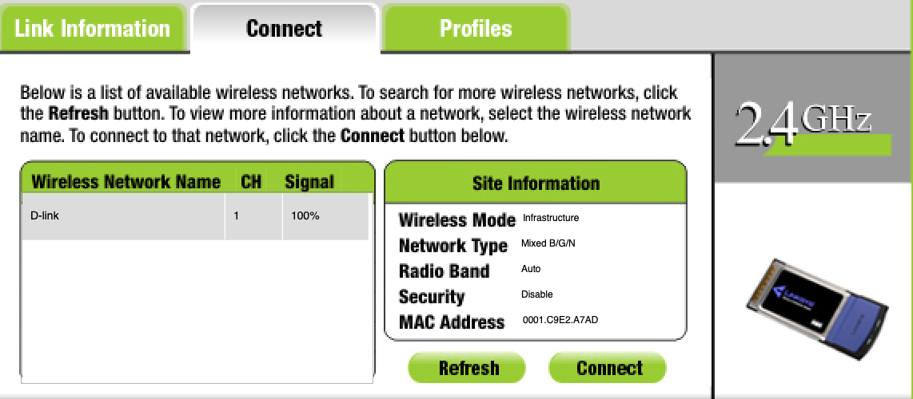
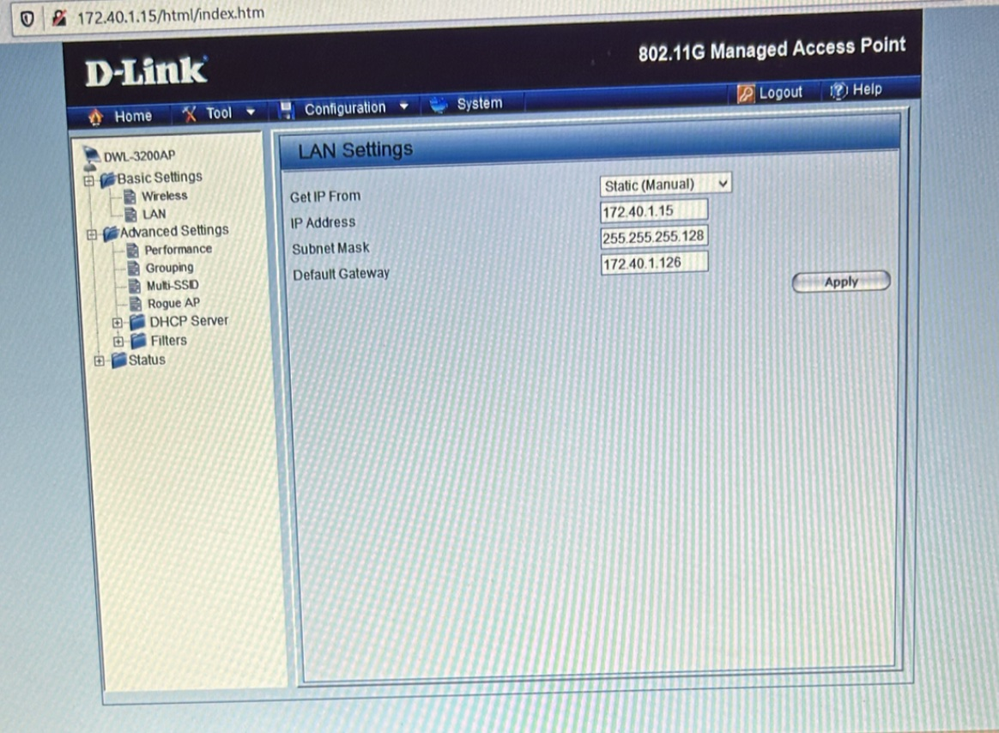

Mission 3 - Mise en place de l'infrastructure réseau avec VLAN visiteurs et dans le VLAN commerciaux
Compte rendu rédigé par : BIDANESSY Coumba, MANCEAU Léandre, RAHMY Arthur
Formation : BTS SIO 1ère année - Option SISR
Établissement : Lycée Paul-Louis Courier, Tours
VLAN Visiteurs
Calcul VLSM wifi Visiteurs
- Adresse réseau :
172.40.2.128 - Adresse de diffusion :
172.40.2.159/27 - Adresse passerelle :
172.40.2.158
Mise en place sur maquette
Voici les étapes clés pour mettre en place la borne wifi visiteurs et d'y accéder à distance :
1. Mise en place selon l'adressage réseau visiteurs, d'une adresse IP sur l'interface LAN
Configuration de la borne (Wireless Router) :
| Paramètre | Valeur |
|---|---|
| IPv4 Address | 172.40.1.15 |
| Subnet Mask | 255.255.255.128 |
2. Ajout de la VLAN 60 (visiteurs) sur le switch et correspondance avec l'interface reliée à la borne WiFi
Switch(config)#vlan 60
Switch(config-vlan)# name Visiteurs
Switch(config-vlan)#
Switch(config-vlan)#end
Switch#configure terminal
Enter configuration commands, one per line. End with CNTL/Z.
Switch(config)#interface FastEthernet0/7
Switch(config-if)#
%SYS-5-CONFIG_I: Configured from console by console
Switch(config-if)#
Switch(config-if)#switchport access vlan 60
Switch(config-if)#no shutdown
Switch(config-if)#
3. Ajout de la sous-interface de la passerelle visiteurs dans le routeur reliant le modem ADSL
Router(config)#int g0/0.10
Router(config-subif)#encapsulation dot1Q 60
%Configuration of multiple subinterfaces of the same main
interface with the same VID (60) is not permitted.
This VID is already configured on GigabitEthernet0/0.60.
Router(config-subif)#ip addr 172.40.2.158 255.255.255.224
4. Connexion au D-Link avec un PC portable

Fiche de tests
Programmes effectuées sur les équipements et tests ont été effectués et réussis.
Wifi dans le VLAN Autres
Mise en place sur maquette
1. Modification du LAN avec une adresse IP du réseau Autres
| Paramètre | Valeur |
|---|---|
| IPv4 Address | 172.40.1.15 |
| Subnet Mask | 255.255.255.128 |
2. Correspondance de la VLAN 20 (VLAN Autres) sur l'interface du switch reliée à la borne WiFi
Switch>enable
Switch#
Switch#configure terminal
Enter configuration commands, one per line. End with CNTL/Z.
Switch(config)#interface FastEthernet0/7
Switch(config-if)#
Switch(config-if)#
Switch(config-if)#switchport access vlan 20
Switch(config-if)#
Fiche de tests
1. Configuration sur le D-Link (interface web)

| Paramètre | Valeur |
|---|---|
| Get IP From | Static (Manual) |
| IP Address | 172.40.1.15 |
| Subnet Mask | 255.255.255.128 |
| Default Gateway | 172.40.1.126 |
2. Ping depuis un PC portable connecté au WiFi, vers le WiFi et un équipement du réseau Autres
Statistiques Ping pour 172.40.1.15:
Paquets : envoyés = 4, reçus = 4, perdus = 0 (perte 0%)
Durée approximative des boucles en millisecondes :
Minimum = 3ms, Maximum = 15ms, Moyenne = 9ms
C:\Users\etudiant>ping 172.40.1.2
Envoi d'une requête 'Ping' 172.40.1.2 avec 32 octets de données :
Réponse de 172.40.1.2 : octets=32 temps<1ms TTL=128
Réponse de 172.40.1.2 : octets=32 temps<1ms TTL=128
Réponse de 172.40.1.2 : octets=32 temps<1ms TTL=128
Réponse de 172.40.1.2 : octets=32 temps<1ms TTL=128
Statistiques Ping pour 172.40.1.2:
Paquets : envoyés = 4, reçus = 4, perdus = 0 (perte 0%)
Durée approximative des boucles en millisecondes :
Minimum = 0ms, Maximum = 0ms, Moyenne = 0ms